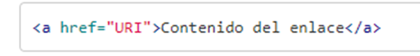
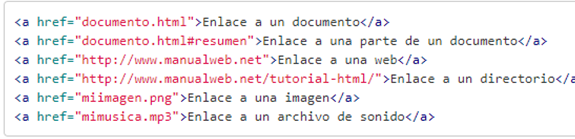
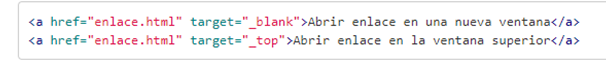

¿Qué son los enlaces en HTML?
Lo más importante de los documentos HTML son los enlaces. Ya que mediante los enlaces en HTML podemos comunicar una página con otra. De esta forma, enlazando documentos HTML podemos acabar tejiendo lo que es Internet. Para crear un enlace en HTML utilizamos el elemento A con la siguiente sintaxis:

Pero solo con esto el enlace no tendrá mucha utilidad ya que el principal objetivo del enlace es enlazar a un destino. Para poder indicar el destino de un enlace utilizamos el [atributo href][Href]. En valor del [atributo href][Href] puede ser cualquier URI que represente un recurso. Es decir, una página, una parte de una página, una URL genérica, un archivo,… De esta forma el enlace en HTML lo crearemos con la sintaxis:
A modo de ejemplo podríamos tener los siguientes enlaces:
Destino del enlace
Pero, ¿dónde se abre el enlace? Pues por defecto y si no hemos configurado nada en el navegador web que estemos utilizando el enlace se abre en la misma ventana en la que tengamos el enlace. Si bien, en el enlace, podemos indicar el destino que queremos darle a dicho enlace. Eso lo podemos hacer mediante el atributo target. Los posibles valores que admite el atributo target son:
- blank, el agente de usuario intentará abrir el enlace en una nueva ventana. La nueva ventana no tendrá nombre.
- self, el agente de usuario intentará abrir el enlace en el mismo marco donde está en código actual.
- parent, el agente de usuario intentará abrir el enlace en el frameset inmediatamente superior al que se encuentra la página. Esto suele suceder cuando tenemos el enlace en un área de frames.
- top, el agente de usuario intentará abrir el enlace en la ventana padre. En el caso de que exista un frameset lo eliminará y se hará con toda la ventana.
- nombre_marco, se podrá indicar el nombre de un frame. En este caso el agente de usuario intentará abrir el enlace en el frame que coincida con el nombre. En el caso de no existir un frame con ese nombre lo abrirá en una nueva ventana, asignándole dicho nombre.
Así podremos tener el siguiente código:
